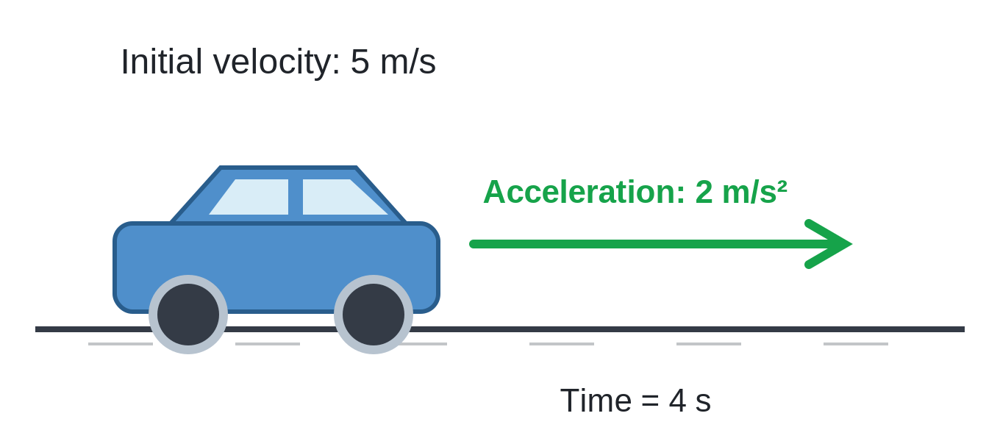

When you first get a problem involving Suvat equations, it's important to identify which quantities are given and which you need to find. Here are some steps to follow:
Sometimes you might not be able to solve for the unknown quantity with the given information in this case its important to solve for any overvariables that you might be able to use to solve for the required one
In most problems you can make assumptions about some of the variables for example the accerleration for x is always 0 and y is -9.81 on earth
Since X's accerleration is 0 its U(initial speed) is the same as V(final speed)
if the problem says anything based on the the object left the ground and retuened to the same spot its yV=-yu else if it says that it rolled of a table or a cliff its s = -height
A car is traveling in a straight line at an initial velocity of 5 m/s. The car accelerates uniformly at 2 m/s² for 4 seconds. Calculate: a The final velocity of the car. b The total distance traveled during the 4 seconds.
Firstdraw a picture of the situation:

Next, identify the known quantities and the unknown quantities:
Choose the appropriate Suvat equation: for this problem we have U,A,T and want V so the correct suvat equation is v = u + at. Then substiute V=5 + (2)(4). then Solve V= 13 m/s
Next, we need to find the total distance traveled. We can use the equation s = ut + ½at². Substituting the known values, we get s = (5)(4) + ½(2)(4)². Solving for s, we find s = 20 + 16 = 36 m.